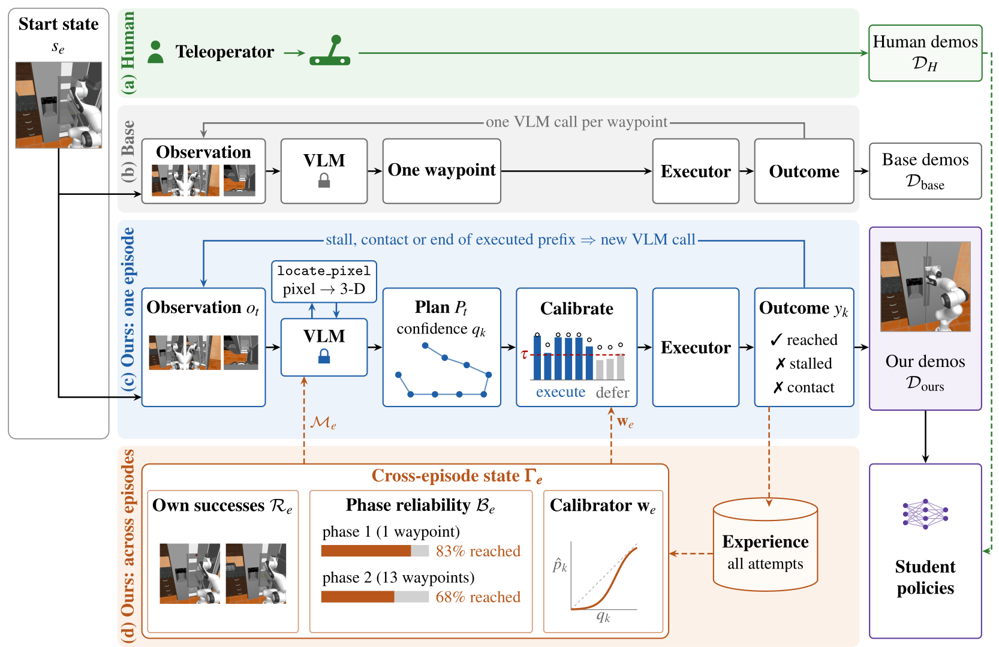
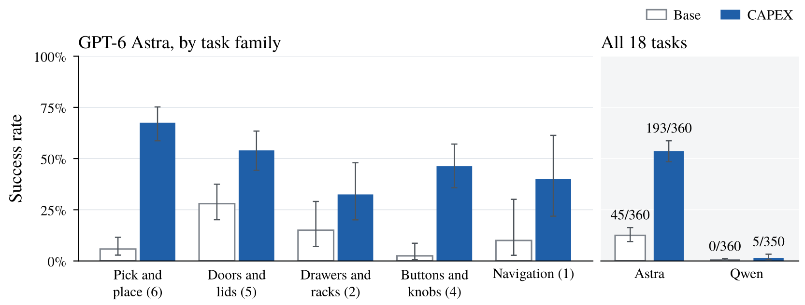
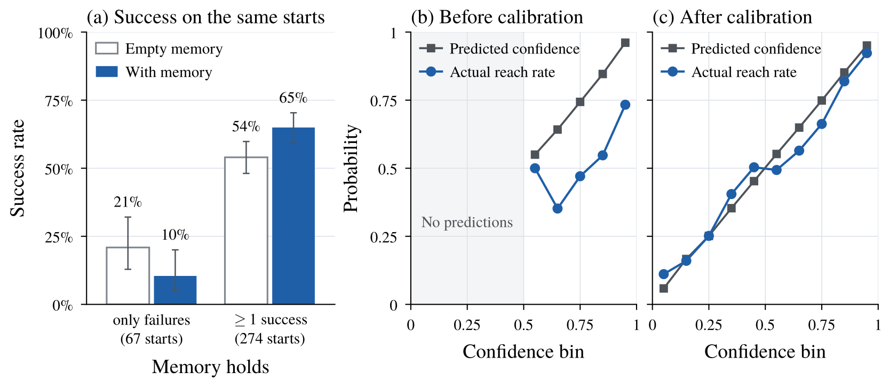
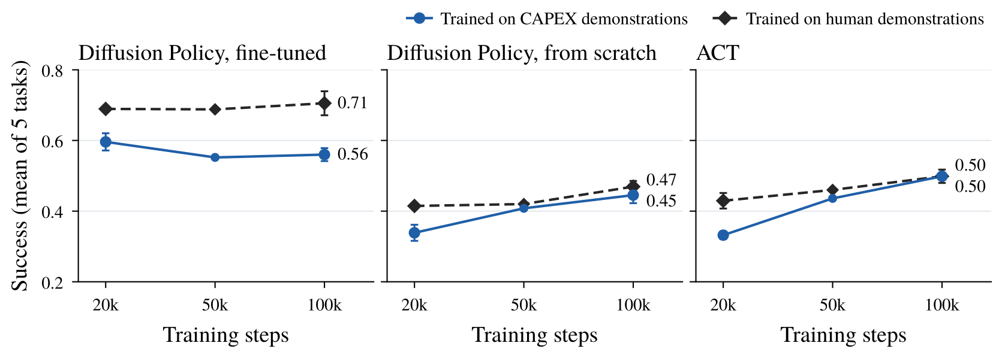

Robot learning has largely relied on human-teleoperated demonstrations to acquire effective learnable behaviors. However, human-operated data collection processes can be unintuitive, difficult to scale, and inherently asynchronous. We explore an alternative: distilling physical behavior from general-purpose multimodal foundation models into deployable robot policies by using the foundation model itself as an autonomous demonstrator. While sufficiently capable models can generate successful zero-shot manipulation trajectories, repeatedly invoking them during physical execution is slow and expensive, limiting their utility as scalable data generators.
As a solution, we introduce CAPEX, an experience-conditioned demonstration collection framework that uses execution experience from previous attempts to adapt how frequently the foundation model must observe, reason, and replan. We evaluate across RoboCasa tasks and on physical Franka and bimanual YAM-arm platforms, measuring task success, model calls, token usage, collection time, and cost. We further train Diffusion Policy and ACT on matched sets of human-teleoperated and foundation-model-generated demonstrations to evaluate the downstream learning value of autonomously collected data.
We find that CAPEX increases the number of successful demonstrations by 4.3× while reducing the cost per successful demonstration by 80%. Policies trained on CAPEX-generated data approach the performance of those trained on matched human demonstrations; with longer training, this gap largely closes for policies trained from scratch. These results suggest that foundation models can serve as scalable sources of reusable robot experience.
Querying a frontier model after every small motion couples data collection directly to model latency and inference cost. CAPEX (Calibrated Adaptive Planning through EXperience Collection) instead lets the model propose temporally extended plans, and uses the robot's own execution outcomes to learn how much of each plan can be trusted before reasoning again. The foundation model stays frozen throughout; all adaptation happens through a small, bounded cross-episode state.

Each model decision proposes a variable-length plan of up to 24 end-effector waypoints, each with a
stated probability of being reached. A locate_pixel tool grounds image pixels to 3-D
points.
Every executed waypoint is labeled reached or stalled / contact-stopped by the controller, which needs no human annotation. A logistic calibrator refit before each episode decides how long a prefix of the plan to execute before observing again.
The VLM context carries a phase-level reliability summary and up to two of the robot's own previous successes, with actions expressed relative to grounded scene points. The context stays bounded no matter how much is collected.
On a bimanual I2RT YAM, CAPEX succeeds on 40/42 collection attempts versus 18/40 for the base GPT-6 Astra teacher, using 11.7 instead of 37.6 model calls and $0.65 instead of $1.64 per successful demonstration. Both teachers end every attempt by declaring the task done; the operator rejected 22 of the base teacher's claims and 2 of CAPEX's. Each clip shows the front camera, with the left and right wrist cameras stacked on its right.
Bread + corn to plate (same start state)
Places both items without moving the plate.
Pushes the plate off its position, then reports the task done.
In-air bowl handover (same start state)
Lift by the rim, hand over in the air, set down upright on the right.
Same start state; the operator labelled this attempt a failure. Base: 6/20 successes on this task.
We train Diffusion Policy and ACT on 20 CAPEX demonstrations per task and compare against the same policies trained on 20 matched human-teleoperated demonstrations. CAPEX-trained policies match or exceed their human-trained counterparts in five of six task–policy comparisons. The rollouts below are closed-loop Diffusion Policy executions with no foundation model in the loop.
Pick Coke “grab the coke can and lift it up” · 4/10 trials succeeded
Stack Cups “stack the orange cup onto the green cup” · 2/10 trials succeeded
Stack Blocks “stack the blue block on top of the green block” · 2/10 trials succeeded
The demonstrations those policies were trained on (collected by CAPEX; exterior and wrist cameras)
Pick Coke: 20/35 attempts succeeded
Stack Cups: 20/20 attempts succeeded
Stack Blocks: 22/28 attempts succeeded (20 kept)
| YAM task | Success | $ / success ↓ | Franka task | Diffusion Policy | ACT | |||||
|---|---|---|---|---|---|---|---|---|---|---|
| Base | CAPEX | Base | CAPEX | Ours | Human | Ours | Human | |||
| Bread + Corn | 12/20 | 20/21 | 1.10 | 0.43 | Pick Coke | 4/10 | 5/10 | 3/10 | 3/10 | |
| Bowl Handover | 6/20 | 20/21 | 2.73 | 0.88 | Stack Cups | 2/10 | 0/10 | 1/10 | 0/10 | |
| Stack Blocks | 2/10 | 1/10 | 0/10 | 0/10 | ||||||
| Overall | 18/40 | 40/42 | 1.64 | 0.65 | Overall | 8/30 | 6/30 | 4/30 | 3/30 | |
We recreate the initial states of the first 20 official human demonstrations for each of 18 atomic RoboCasa tasks (360 paired starts) and compare a base VLM that predicts one waypoint per request with the same VLM under CAPEX. With GPT-6 Astra, CAPEX outperforms the base teacher on 14 of 18 tasks, 11 of them significantly.

| Method | Success ↑ | $ / success ↓ | Requests / success ↓ | Minutes / success ↓ |
|---|---|---|---|---|
| Astra (Base) | 45/360 12.5% | 9.15 | 244 | 39.7 |
| Astra + CAPEX | 193/360 53.6% | 1.83 | 37 | 6.6 |
| Qwen3.8-27B (Base) | 0/360 0.0% | — | ∞ | ∞ |
| Qwen3.8-27B + CAPEX | 5/350 1.4% | — | 4,819 | 2,332 |
Demonstrations collected by CAPEX vs. human teleoperation from the same start
Both sources are rendered by the same RoboCasa pipeline at the same resolution; all simulation clips play in real time.
“Pick the mango from the plate and place it in the pan.”
“Close the toaster oven door.”
“Press the start button on the microwave.”
More CAPEX demonstrations across task families
Close Fridge
Open Cabinet
PnP Counter→Cabinet
Turn Off Stove
PnP Sink→Counter
Navigate Kitchen
Clearing memory before each episode isolates the effect of experience. Once the robot has at least one prior success, collection success rises from 54.0% to 65.0% on the same starts (p = 0.0016), and successful executions become shorter: −27% model requests and −21% wall-clock time. Raw VLM confidence is poorly calibrated (it never goes below 0.5, while only 70% of waypoints are reached). Calibrating on the robot's own outcomes brings ECE from 0.24 to 0.05 and AUROC from 0.57 to 0.75, so the robot can safely truncate plans when later waypoints are unreliable.

On six tasks we train Diffusion Policy (fine-tuned from RoboCasa365 and from scratch) and ACT on paired CAPEX and human datasets from identical initial states. At 20k steps, CAPEX-trained policies approach human-trained performance. With longer training the gap largely closes for policies trained from scratch: at 100k steps, ACT reaches 0.50 vs. 0.50 and scratch Diffusion Policy 0.45 vs. 0.47.

Simulation policy rollouts (Diffusion Policy trained from scratch on CAPEX demonstrations only)
Close Fridge · 0.79 success at 20k steps
Close Toaster Oven Door · 0.51
Turn On Microwave · 0.27
@inproceedings{anonymous2027capex,
title = {{CAPEX}: Efficiently Distilling Foundation Model Behavior into Deployable
Robot Policies through Experience-Adaptive Reasoning},
author = {Anonymous},
booktitle = {Submitted to the International Conference on Learning Representations (ICLR)},
year = {2027},
note = {Under review}
}